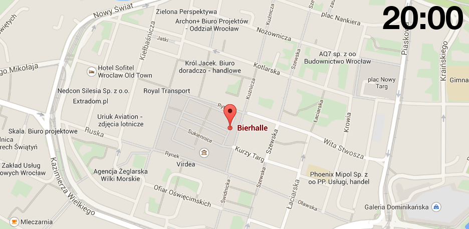

Sunday Party at Bierhalle (Rynek 24 street)

Speakers
Nick Sutterer
While Trailblazer offers you abstraction layers for all aspects of Ruby On Rails, it does not missionize you. Wherever you want, you may fall back to the "Rails Way" with fat models, monolithic controllers, global helpers, etc. This is not a bad thing, but allows you to step-wise introduce Trailblazer's encapsulation in your app without having to rewrite it.
Trailblazer is all about structure. It helps re-organize existing code into smaller components where different concerns are handled in separated classes. Forms go into form objects, views are object-oriented MVC controllers, the business logic happens in dedicated domain objects backed by completely decoupled persistence objects
Alberto Brandolini
IDEA → STICKIES → GREEN BAR. While many developers focus on improving development speed, there’s a whole world of improvement that can be unlocked by focusing on quicker understanding of the project domain. In this talk we’ll see how a different approach to requirement gathering - EventStorming - can be used to cross the chasm between stakeholders and developers, leading to better software faster.
Jim Gay
THE MISSING SYSTEM Managing coupling and cohesion in our programs is a difficult and never-ending task. Often we struggle to know exactly where to put what code. Over the last few years working with and studying Ruby and DCI I've built up a toolset for managing cohesive set of behaviors for inter-related objects called Surrounded. It helps me maintain related code in the same place and gives me a discussion point for team members implementing features in our systems. We'll walk through the adaptable interface it provides and how it can help your better organize your feature set.
Michał Taszycki
WHAT IF CLEAN CODE IS A SCAM? It seems that we are keen to follow charismatic leaders who tell us how to do stuff. There are already a lot of rules and principles that we take for granted instead of asking questions: Will this really improve my code? Will it help me deliver faster/more reliably in the long run? It seems that sometimes we fail to challenge their ideas. Maybe you can have too many classes? What if your methods don't need to fit in a tweet? Maybe Object Oriented design as a whole is a case of premature optimisation? What if we just waste time writing tests for everything? Maybe cucumber is a massive overkill? What if... DHH was right? Then again, he is also a charismatic leader...
Norbert Wójtowicz
CLOJURESCRIPT + REACT.JS: HOW I LEARNED TO STOP WORRYING AND LOVE THE BROWSER Over the last few years, there has been a stronger emphasis on functional programming languages and constructs in mainstream programming. The rise of FP popularity is not due to concurrency (although still valid), but the recognition that minimizing side-effects yields to smaller code that is easier to test and reason about. ClojureScript finally brings that perspective to the front-end world. This talk is an introduction to a different kind of front-end development. Together, we will explore how ClojureScript helps accelerate front-end development and how to avoid the most common pitfalls; a molotov cocktail of information and pizazz to put you on the fast-track towards web development nirvana.
Thorsten Ball
UNICORN UNIX MAGIC TRICKS This talk is the story of my first encounter with the Unicorn webserver. I was amazed - how would one even build such a piece of software with a master-worker architecture and features like hot-reloading? With magic? Luckily, I found out. In this talk we're going to take a look at Unix from a developer's perspective: forking, pipes, signal handling, sockets. And then we'll take a close look at Unicorn and see how it uses the basic Unix building blocks, these tricks. At the end we're going to see how Unicorn's hot-reloading, preloading and the scaling of processes by signals work. We're going to see that it's not magic, but really just Unix that powers Unicorn.
Nicolas Dermine
LIVE CODE MUSIC (IN RUBY!) WITH SONIC PI Sonic Pi is a piece of software that brings together programming (using Ruby) and creating music. You can either write the music and play it in one go, or 'live code' and hear the music adapt continually to your code changes.It is a great way to :* have fun!* learn (music and / or programming)* teach (music and / or programming)* express your creativity. This talk will show you the simple building blocks of Sonic Pi and hopefully get you excited about live coding music for some or all of the goals above.
Schedule
Friday 13th March
Saturday 14th March
Sunday 15th March
Buy tickets
Add this page to bookmarks because next batch of tickets will be available soon.
The mission
The main goal of the conference is very clear. We want to help Ruby professionals become better at what they do. Wroc_love.rb serves best to people who are already fluent with Ruby. The ideas presented at our conference are very advanced. They are meant to inspire the way we write code, the way we help our clients and users. It’s not uncommon for us to present you ideas that come from the Java and .NET worlds, we believe that their ideas can have a great influence on our community. There are good reasons, why our conference is called “the best Java conference in the Ruby world”.
Experiments
Our goal is to ensure a good environment to learn and discuss. We love confronting ideas, even when it’s uncomfortable to the Ruby status-quo. We love experimenting with new formats of talks and discussions, like fights, fishbowls and crowd-moderated discussion panels. Everything that can inspire the Ruby programmers is more than welcome at our conference. Let us know, what you’d be interested in experimenting with!
Inspiration and safety
Conferences are not only about listening. Most of the value comes from talking to each other. Our mission
is to create an inspiring, thoughtful, creative and safe space to everyone involved. The venue is
known to be of good quality - it’s a University of Wroclaw building. It has many ways to ensure safety
of all the people inside like monitoring and special security people.
It is needless to say that this conference is
a place for good people, only. Good people respect each other, are nice to each other, smile, and make
everyone (without exceptions) feel comfortable.
Conference Code of Conduct
All attendees, speakers, sponsors and volunteers at our conference are required to agree with the following code of conduct. Organisers will enforce this code throughout the event. We are expecting cooperation from all participants to help ensuring a safe environment for everybody.
Need Help? As part of our goal, we’re dedicated to react to all situations that we’ll be notified, ideally directly to us. There will be a special phone number, you can call at any time to let us know about any problem or ask any question.
You have our contact details in the emails we've sent.
There will be a special phone number, you can call at any time to let us know about any problem or ask any question. Additionally, there will be a special team of student volunteers who will be visible during the conference (If you want to join the team, please let us know). Student volunteers are here to help find your way around and resolve any problem.
The Quick Version
Our conference is dedicated to providing a harassment-free conference experience for everyone, regardless of gender, age, sexual orientation, disability, physical appearance, body size, race, or religion (or lack thereof). We do not tolerate harassment of conference participants in any form. Sexual language and imagery is not appropriate for any conference venue, including talks, workshops, parties, Twitter and other online media. Conference participants violating these rules may be sanctioned or expelled from the conference without a refund at the discretion of the conference organisers.
The Less Quick Version
Harassment includes offensive verbal comments related to gender, age, sexual orientation, disability, physical appearance, body size, race, religion, sexual images in public spaces, deliberate intimidation, stalking, following, harassing photography or recording, sustained disruption of talks or other events, inappropriate physical contact, and unwelcome sexual attention.
Participants asked to stop any harassing behavior are expected to comply immediately.
Sponsors are also subject to the anti-harassment policy. In particular, sponsors should not use sexualised images, activities, or other material. Booth staff (including volunteers) should not use sexualised clothing/uniforms/costumes, or otherwise create a sexualised environment.
If a participant engages in harassing behavior, the conference organisers may take any action they deem appropriate, including warning the offender or expulsion from the conference with no refund.
If you are being harassed, notice that someone else is being harassed, or have any other concerns, please contact a member of conference staff immediately.
Conference staff will be happy to help participants contact hotel/venue security or local law enforcement, provide escorts, or otherwise assist those experiencing harassment to feel safe for the duration of the conference. We value your attendance and participation.
We expect participants to follow these rules at conference and workshop venues and conference-related social events.
Original source and credit: http://2012.jsconf.us/#/about & The Ada Initiative
This Code of Conduct is licensed under a Creative Commons Attribution 3.0 Unported License
Who we are
Wroc_love.rb started as an activity of the DRUG (Wroclaw User Group) organization. However, over time, people loved it so much that the organization team grew to much more than that. Wroc_love.rb is now organized by Rubyists from many different Polish regions.
Supporters
If you like our mission, then you can help us by buying a special supporter ticket. It’s 600 EUR. This ticket guarantees your logo on the website and on the videos. Your company would join other already confirmed supporters like:

Partners
Need help?